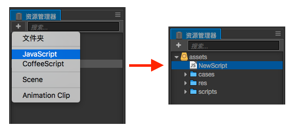
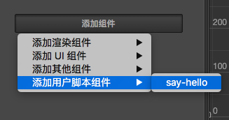

创建和使用组件脚本
创建组件脚本
在 Cocos Creator 中，脚本也是资源的一部分。你可以在资源编辑器中通过点击"创建"按钮来添加并选择 JavaScript 或者 CoffeeScript 来创建一份组件脚本。此时你会在你的资源编辑器中得到一份新的脚本：

一份简单的组件脚本如下：
cc.Class({
extends: cc.Component,
properties: {
},
// use this for initialization
onLoad: function () {
},
// called every frame, uncomment this function to activate update callback
update: function (dt) {
},
});编辑脚本
Cocos Creator 内置一个轻量级的 Code Editor 供用户进行快速的脚本编辑。但用户也可以根据自己的 需求，选择自己喜爱的文本工具（如：Vim，Sublime Text，Web Storm，Visual Studio...）进行 脚本编辑。
通过双击脚本资源，可以直接打开内置的 Code Editor 编辑。如果用户需要使用外部工具，则先在文件 系统中定位资源目录，再经由自己的文本工具打开来编辑。
当编辑完脚本并保存，Cocos Creator 会自动检测到脚本的改动，并迅速编译。
添加脚本到场景节点中
将脚本添加到场景节点中，实际上就是为这个节点添加一份组件。我们先将刚刚创建出来的 “NewScript.js” 重命名为 “say-hello.js”。然后选中我们希望添加的场景节点，此时该节点的属性会显示在 属性检查器 中。在 属性检查器 的最下方有一个“添加组件”的按钮，点击按钮并选择：添加用户脚本 -> say-hello 来添加我们刚刚编写的脚本组件。

如果一切顺利，你将会看到你的脚本显示在 属性检查器 中：

注意: 你也可以通过直接拖拽脚本资源到 属性检查器 的方式来添加脚本。
继续前往 声明属性。